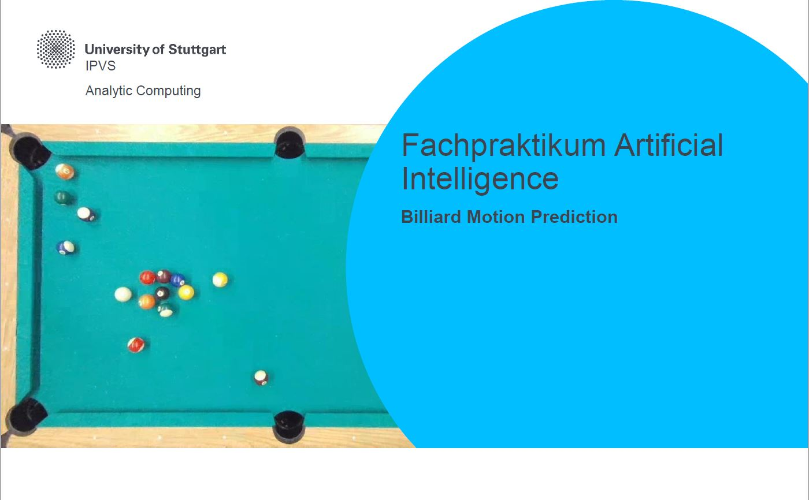
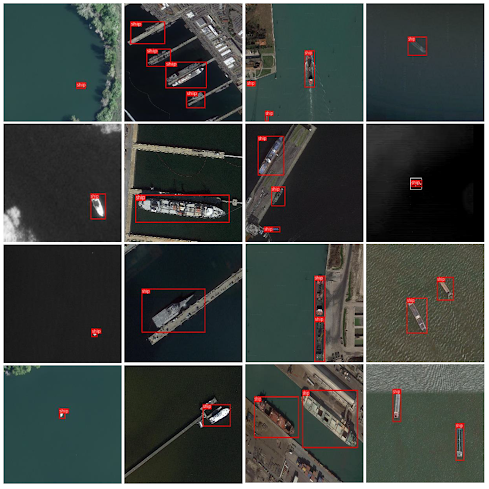

About Me
Currently working as a Deep Learning Engineer at SiMa.ai
Background:
M.Sc. graduate in Information Technology, with specialization in Embedded Systems and Artificial Intelligence. Over three years of experience in the Automotive Industry as a Software Developer, and an internship in Embedded-AI. For my masters thesis, I worked on the development of nighttime vehicle detection methods using Computer Vision and Deep Learning. Skilled in applying critical thinking to real-world challenges.
Projects
Billiards Motion Prediction +
Predicting motion of billiard balls using neural network models (Universität Stuttgart)
View Project Source Code AI or Not +
In this competition, my task was to build a neural network model that can identify AI-generated images.
View Project Source CodeShip-Detection +
In this competition, my goal was to use satellite imagery to detect ships in ports.
View Project Source Code Competitive Programming
LeetCode
Solved data-structure and algorithm based problems in C++, participated in weekly/biweekly contests
View LeetCode ProfileCodeforces, CodeChef, CSES
Solved data-structure, algorithm and math based problems in C++, participated in Codeforces contests.
View Repository Containing Problems And ContestsView Codeforces Profile
Blog Posts
Could Artificial General Intelligence (AGI) solve/violate “no free lunch theorem”?Contact
Email: asnecemnnit@gmail.com
Address: Stuttgart, Germany
LinkedIn Profile
GitHub Profile